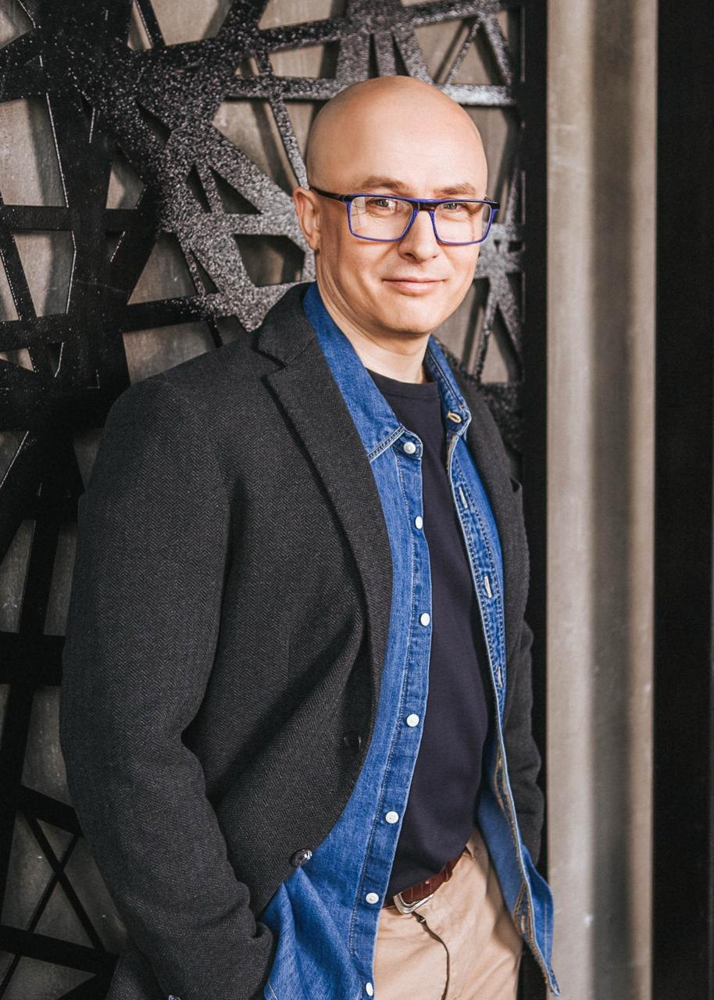
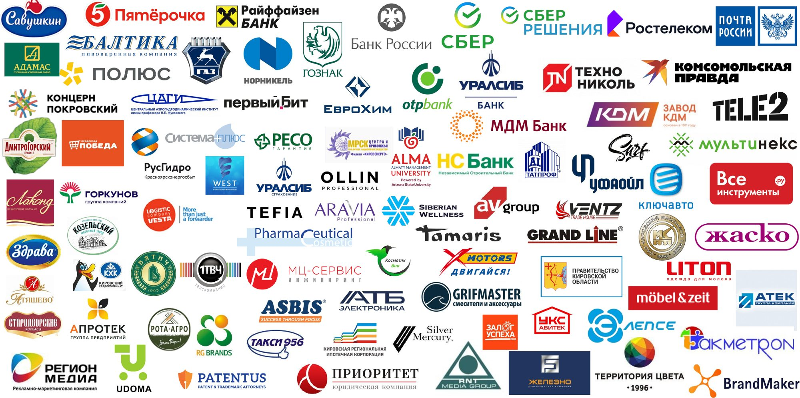

+20%продаж за 4 месяца
Продажи
Нефтетрейдер, Уфа
Рост продаж на 20% за четыре месяца в кризисный для отрасли год. Результат проекта по продажам.
Антикризисный штаб – стратегическая сессия
Решения по ассортименту, каналам продаж, сегментации, выручке, клиентам и переговорам. Итог – план, где у каждого пункта есть ответственный, срок и условие пересмотра.
30 минут с Алексеем Урванцевым. Без обязательств.

Сессия – рабочий инструмент. Но в кризис она ломается в трёх местах.
Планировать на три года, когда непонятен следующий квартал, бессмысленно. Нужен план на 90 дней с точками пересмотра.
Под угрозой организации сужают поиск вариантов и централизуют решения. Это описанный эффект, а не особенность вашей команды. Но именно в кризис информация «с земли» стоит дороже всего.
Давят поставщики, банки, сети. Решения, принятые без плана переговоров, разбиваются о первого же монополиста.
Антикризисный штаб собран под эти три дефицита.
30 минут. По итогам скажу, нужен ли вам антикризисный штаб.
Нажмите на этап, чтобы раскрыть
Отдельно разговариваю с каждым ключевым руководителем: первым лицом, топ-менеджерами, участниками. Разбираю вашу нишу и прошлые стратегические сессии.
Становится видно, насколько по-разному вы оцениваете запас прочности компании, и кто способен предложить решение, а кто только диагноз. Бывает, что все идеи находятся на уровне руководителей отделов, а у топов их нет ни одной.
Если включить в одну группу руководителей высшего звена с руководителями отделов, первые начнут управлять обсуждением, а вторые замолчат. Где-то уровни нужно развести, где-то наоборот смешать подразделения.
Работаем очно, на вашей территории. Серия штурмов по вашим задачам, группы соревнуются количеством и качеством идей. Инструменты подбираем под задачу: SWOT, пять сил Портера, ТРИЗ и другие. Первое лицо высказывается последним.
Новое встраивается в то, что уже работает – принцип методики бережного внедрения изменений «Переплавка©». План внедрения собирается на самой сессии, а не высылается потом.
Что делаем и кто отвечает – и при каком событии возвращаемся к плану роста, а при каком переходим к плану Б.
Привлечение дорожает, поэтому главный рычаг – те, кто уже с вами.
Продукт в деньгах, сроках и снятых рисках клиента. Варианты для тех, кто не может подписать полную сумму, – без демпинга.
Где искать отсрочки и каникулы по платежам и когда вы возвращаетесь к прежним договорённостям. Без этого временные уступки становятся новой нормой.
Кто затормозит внедрение, кто близок к выгоранию, что с каждым делаем.
Точный план сессии определяем после диагностики. Не всё из списка нужно каждой компании.
Алексей Урванцев, тренер-практик по авторитетному влиянию (продажи, выступления, переговоры, управление). 500+ корпоративных проектов в производстве, торговле, банках, ритейле.
В кризис внутри компании перестают говорить правду: любая позиция читается как борьба за ресурс или за место. Я не участвую в ваших конфликтах, задаю вопросы, которые внутри задавать неудобно, и ухожу после получения результата.
Рост продаж на 20% за четыре месяца в кризисный для отрасли год. Результат проекта по продажам.
После пустого месяца вышли на 20 сделок в неделю без демпинга и распродаж.
Стратегическая сессия: вовлечены все участники, по итогам приоритизированы инициативы на 2025–2027 годы.
За сессию команда разработала несколько десятков идей и сразу проверила их на реалистичность. Часть пошла в работу сразу после мероприятия.
Письма-благодарности открываются в карточках. Контакты для рекомендаций – по запросу.

Листайте логотипы в сторону.
Справедливо. Поэтому начинаем с разговора, а не с сессии: если задача решается без неё, я так и скажу.
Обычно причина в составе групп. Топы оказались в одной группе с подчинёнными и разобрали их идеи как нереальные. Это решается до сессии, а не модерацией по ходу.
Решения остались без ответственного, срока и критерия проверки. Поэтому план внедрения собирается на самой сессии, а не высылается потом.
Отрасль знаете вы и ваша команда. Моя работа – сделать так, чтобы это знание превратилось в решения.
Очно, на вашей территории.
Диагностика – 250 000 ₽, день сессии – 250 000 ₽, трекинг внедрения – 250 000 ₽ за 8 часов.
Это ориентир: итоговая стоимость – после диагностики. Для юридических лиц РФ при заказе от 500 000 ₽ возможна рассрочка или факторинг.
30 минут. Разберём продажи, клиентов, переговорную ситуацию и состояние команды. По итогам скажу, нужен ли вам штаб, в каком формате и что можно сделать своими силами.